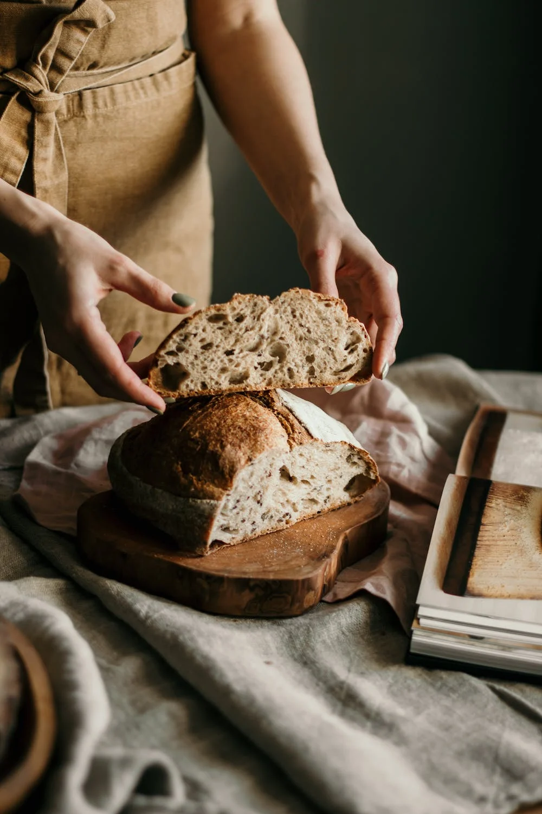
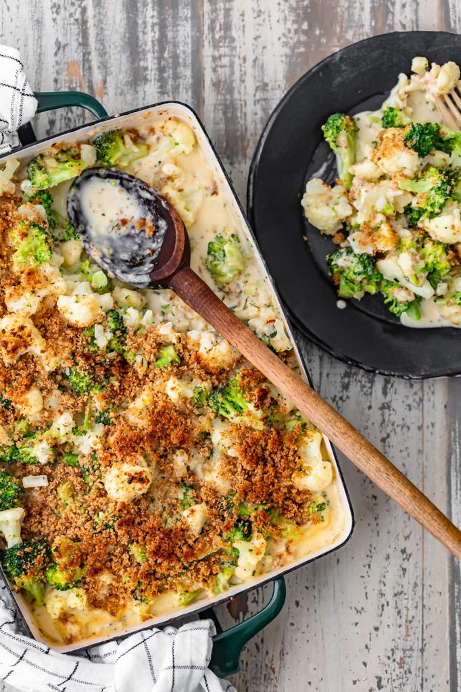
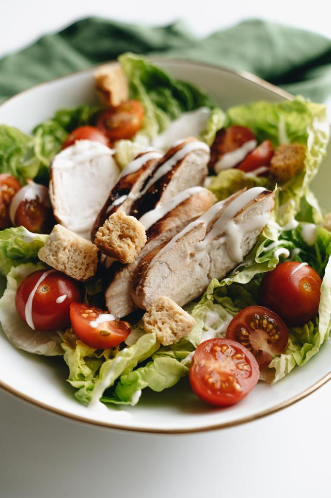
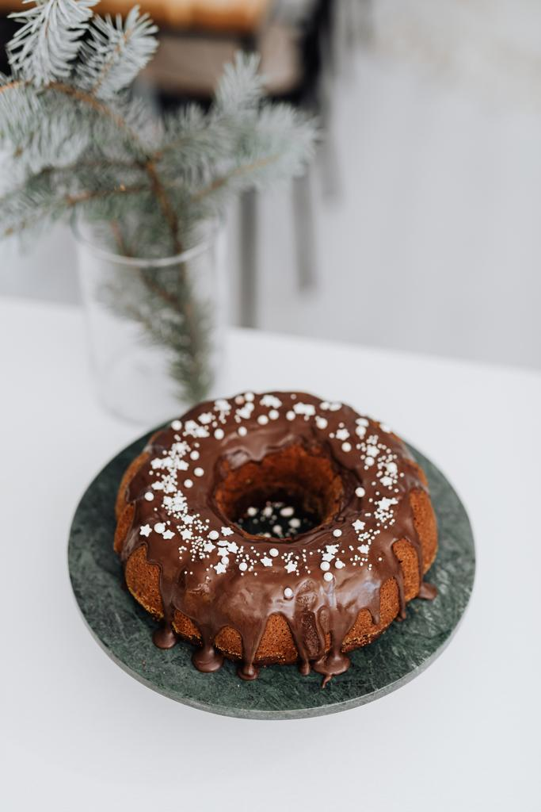

Pão Caseiro - Um sucesso pandémico
1h30min
4 pessoas
Saber Mais

Gratinado de Brócolos - Fresco e delicioso
60 mins
3 pessoas
Saber Mais

Salada Caesar - Um Clássico Leve e Simples
30 mins
2 pessoas
Saber Mais

Bolo de Alfarroba - Uma aternativa saudável
2 horas
4 pessoas
Saber Mais

“Experimentei este Sábado e
adorei!
Super rápido e com um bom
balanço nutricional, fiquei fã.”


“Depois de uma crise de ideias encontrei esta receita e resolvi experimentar. Foi um sucesso cá por casa!.”